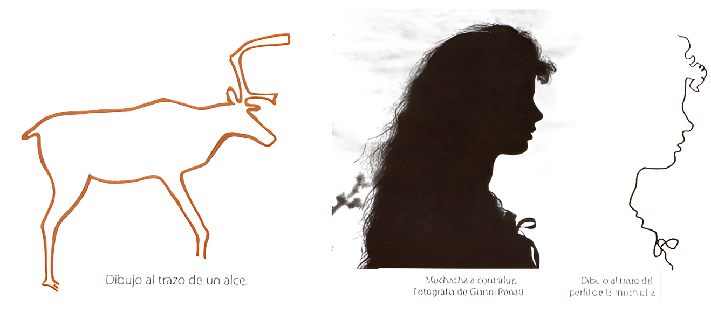
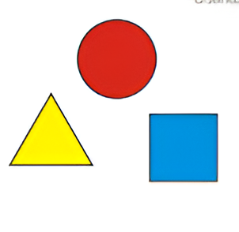

Elementos y Principios del Arte
Objetivos
- Elementos del arte: línea, forma, color, textura, espacio.
Contenido:
Los elementos del arte son los componentes básicos que los artistas utilizan para crear obras visuales. Comprender estos elementos es esencial para analizar y apreciar cualquier tipo de arte. Entre los elementos más fundamentales se encuentran la línea, la forma y el color. A continuación, se exploran estos tres elementos en detalle.
Línea
Características de la Línea
La línea es el elemento más básico del arte y puede definirse como una marca continua que se extiende entre dos puntos. Las líneas pueden variar en grosor, longitud, dirección y carácter, lo que les permite transmitir diferentes sensaciones y significados. Existen varios tipos de líneas, incluyendo rectas, curvas, quebradas, horizontales, verticales y diagonales.
Funciones de la Línea
Las líneas sirven múltiples funciones en el arte. Pueden definir bordes y contornos, crear texturas y patrones, sugerir movimiento y dirección, y establecer un marco de referencia espacial. Las líneas también pueden evocar emociones; por ejemplo, las líneas suaves y onduladas pueden sugerir calma y fluidez, mientras que las líneas angulosas y rectas pueden transmitir rigidez y tensión.
Aplicaciones de la Línea
La línea es utilizada en una amplia variedad de medios y estilos artísticos. En el dibujo, las líneas pueden delinear formas y figuras, así como crear sombras y detalles. En la pintura, las líneas pueden guiar la composición y dirigir la atención del espectador. En el diseño gráfico y la ilustración, las líneas son esenciales para crear imágenes claras y comunicativas.
Forma
Características de la Forma
La forma se refiere a cualquier área definida por bordes dentro del espacio; en otras palabras, es una figura bidimensional con altura y anchura. Las formas pueden ser geométricas, como cuadrados, círculos y triángulos, o pueden ser orgánicas, como las formas libres e irregulares que encontramos en la naturaleza.
Funciones de la Forma
Las formas son cruciales para organizar y estructurar una obra de arte. Pueden representar objetos reconocibles o pueden ser abstractas y simbólicas. Las formas geométricas tienden a transmitir estabilidad y orden, mientras que las formas orgánicas pueden expresar dinamismo y naturalidad. La interacción entre formas positivas (las figuras) y formas negativas (el espacio alrededor y entre las figuras) también es importante para la composición.
Aplicaciones de la Forma
En la escultura y la arquitectura, la forma es esencial para la estructura y la funcionalidad. En la pintura y el dibujo, las formas ayudan a construir la representación visual de la realidad o de ideas abstractas. En el diseño gráfico, las formas se utilizan para crear iconos, logos y otros elementos visuales que deben ser fácilmente reconocibles y comunicativos.
Color
Características del Color
El color es el elemento del arte que se percibe como luz reflejada en una superficie. Se compone de tres propiedades principales: tono, valor y saturación. El tono se refiere al nombre del color (rojo, azul, verde, etc.), el valor se refiere a la claridad u oscuridad del color, y la saturación se refiere a la intensidad o pureza del color.
Funciones del Color
 El color puede evocar emociones, crear ambiente y añadir profundidad a una obra de arte. Los colores cálidos (rojos, naranjas, amarillos) suelen asociarse con energía y calidez, mientras que los colores fríos (azules, verdes, violetas) pueden transmitir calma y serenidad. Los artistas utilizan esquemas de colores, como colores complementarios, análogos y monocromáticos, para crear armonía o contraste en sus obras.
Aplicaciones del Color
En la pintura, el color es esencial para la creación de realismo, atmósfera y expresión emocional. En el diseño gráfico, el color se utiliza para captar la atención y comunicar mensajes específicos. En la moda y el diseño de interiores, el color juega un papel crucial en la creación de estilos y ambientes deseados.
Conclusión
La línea, la forma y el color son tres elementos fundamentales del arte que los artistas manipulan para crear sus obras. La línea proporciona estructura y movimiento, la forma ofrece organización y representación, y el color añade emoción y profundidad. Juntos, estos elementos permiten a los artistas explorar y expresar una vasta gama de ideas y sentimientos, enriqueciendo así el mundo del arte y la percepción visual de quienes lo contemplan.